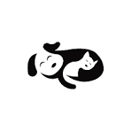

Link title
Link description

Having to raise both my younger brother and my cat Mimi together thaught me how similar pets are to toddlers When we talk about fur babies, they are no difference from human baies! Hihi... I say so. Because they both gave me a sweet tough time, and I loved every single moment! If you love cats or anyother fur animals, then you're at the right place lol!
As an international student, I understand how important it is to manage money carefully. Sometimes my parents are not able to send much upkeep money because of international transfer fees, exchange rates, and other financial challenges. Because of this, I learned that I do not always need to buy everything new.
Many international students face similar situations, but this need is not only for international students. Domestic students may also struggle with college expenses, housing needs, school supplies, clothing, and daily living costs. Meredith Share Closet is meant to support any student who could benefit from shared resources.

Description of event activity.

Description of event activity.
Description of event activity.
Link description